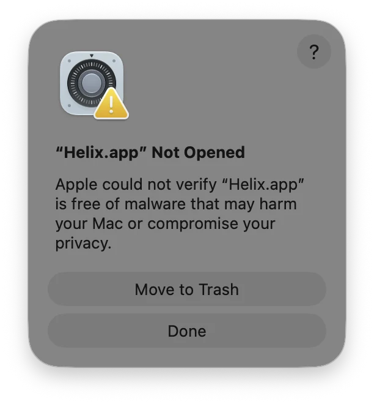
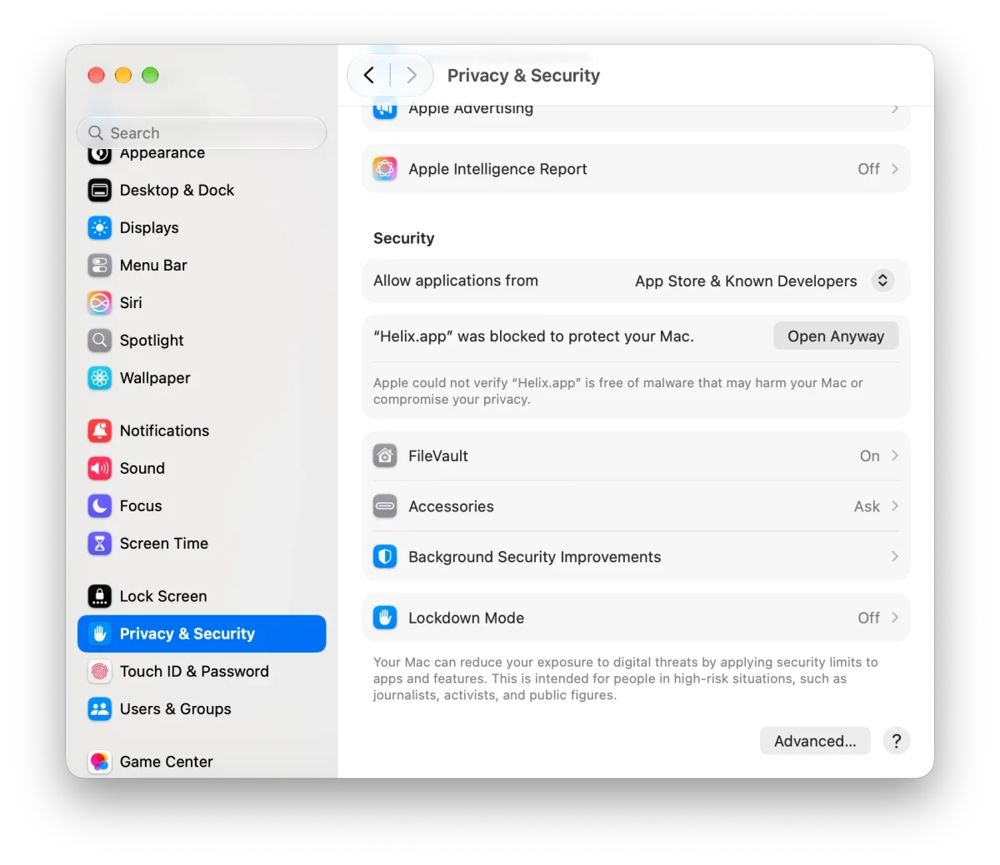
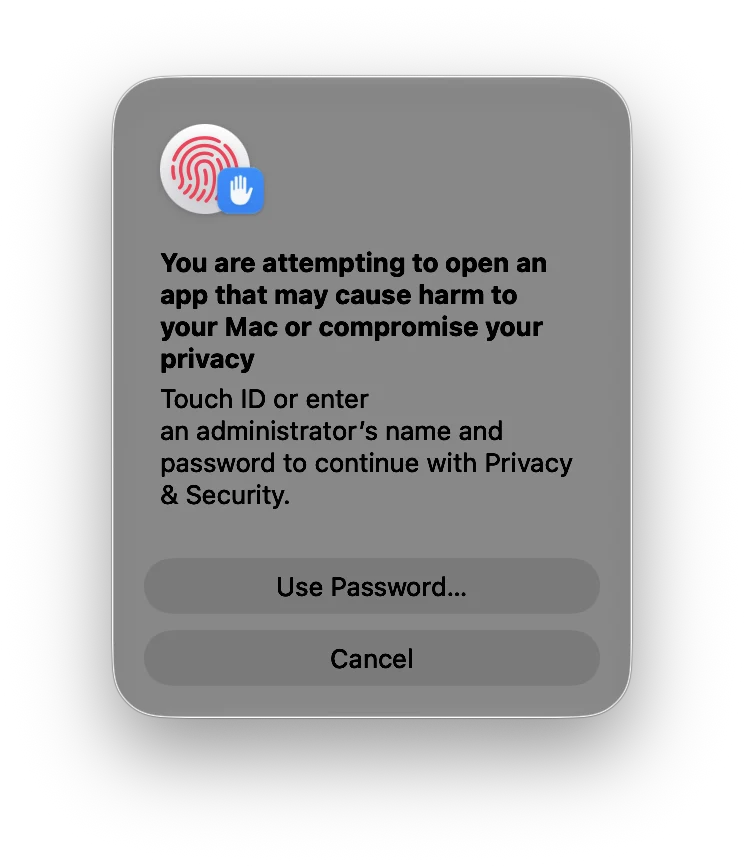
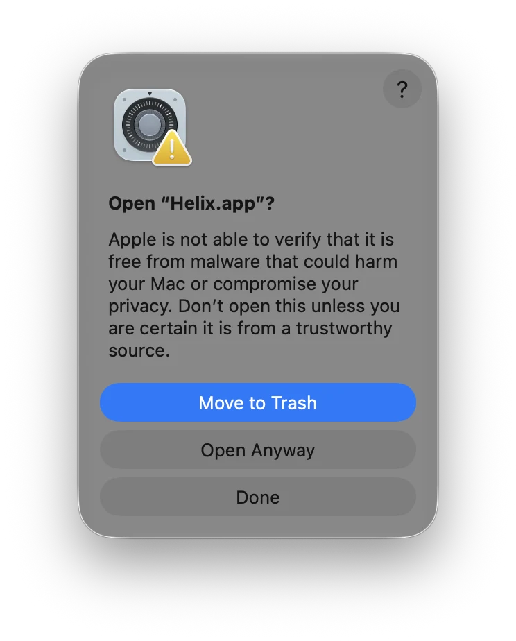

1. Download
Helix is free and needs macOS 13 (Ventura) or later. On the download page, pick the file that matches your Mac:
Helix_…_aarch64.dmgHelix_…_x64.dmgNot sure which one you have? Open the Apple menu › About This Mac: it shows Chip: Apple M… for Apple Silicon, or Processor: Intel.
2. First launch
Why macOS asks
Apple charges developers $99 a year to sign their apps. Helix is free and made by one person, who did the math: $99 is about five months of Claude, the AI that helps polish Helix down to its smallest corner, versus one year of Apple doing… well, not much. Claude won.
So Helix isn’t signed, and macOS blocks it the first time, as it does for any app whose maker it can’t check. That’s not a sign of a problem: Helix’s code is public, open for anyone to read. The DMGs aren’t built on someone’s laptop: GitHub builds them automatically from that public code, in the open. And every download can be checked on VirusTotal.
And if Helix becomes a hit, signing it is definitely on the table.
What to do (once, the first time)
Open the DMG and drag Helix into the Applications folder.
-
Open Helix. macOS says “Helix.app” Not Opened: click Done (not Move to Trash).

-
Open System Settings › Privacy & Security and scroll down to Security. Next to “Helix.app” was blocked to protect your Mac, click Open Anyway, then confirm with Touch ID or your password.


-
macOS asks one last time, Open “Helix.app”?: click Open Anyway.

The wording can differ slightly between macOS versions. From then on, Helix opens normally.
Want to double-check the download?
Drop the DMG on VirusTotal, which scans it with dozens of antivirus engines, or read the reports for version 1.0.0: Apple Silicon · Intel.
You can also compare the file’s SHA-256 with the one shown next to it on the download page, by typing shasum -a 256 Helix_*.dmg in Terminal.
3. Updates
Helix checks GitHub once a day and tells you when a new version is out (Helix › Check for Updates…). Download it, replace the old app in Applications, and do the first-launch steps once more. Your projects are not affected.
See what changed in each version in the release notes.
4. Get started
Open Help › Sample Project: it opens a ready-made project with many kinds of tables, analyses and graphs. It’s the quickest way to see what Helix can do, and to find a starting point for your own data.
A question or an idea? Join the Discussions. Something doesn’t work? Report a problem.